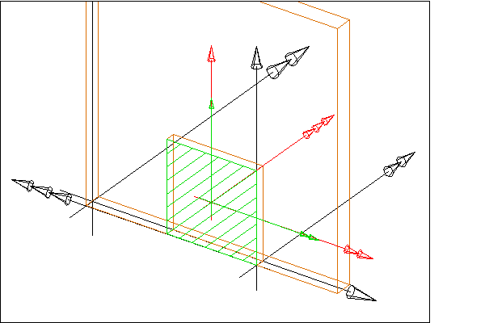

5.4.3.25 IfcOpeningElement
The opening element stands for
opening, recess or chase, all reflecting voids. It represents a
void within any element that has physical manifestation. Openings
can be inserted into walls, slabs, beams, columns, or other
elements.
The IFC specification provides two entities for opening
elements:
- IfcOpeningStandardCase is used for all openings that
have a constant profile along a linear extrusion. They are placed
relative to the voided elements and the extrusion direction is
perpendicular to the plane of the element (horizontally for
walls, vertically for slabs). Only a single extrusion body is
allowed. It cuts through the whole thickness of the voided
element, i.e. it reflects a true opening.
- IfcOpeningElement is used for all other occurrences of
openings and in particular also for niches or recesses.
NOTE View definitions or implementer
agreements may restrict the types of elements which can be voided
by an IfcOpeningElement or
IfcOpeningStandardCase
There are two different types of opening elements:
- an opening, where the thickness of the opening is greater or
equal to the thickness of the element;
- a recess or niche, where the thickness of the recess is
smaller than the thickness of the element.
The attribute PredefinedType should be used to capture
the differences,
- the attribute is set to OPENING for an opening or
- the attribute is set to RECESS for a recess or niche.
- If the value for PredefinedType is omitted, or the
value is set to NOTDEFINED, no specific information of whether it
is an opening or recess shall be assumed.
An IfcOpeningElement has to be inserted into an
IfcElement by using the IfcRelVoidsElement
relationship. The relationship implies a Boolean subtraction
operation between the volume of the voided element and the volume
of the opening. It may be filled by an IfcDoor,
IfcWindow, or another filling element by using the
relationship IfcRelFillsElements.
HISTORY New entity in IFC1.0
IFC2x CHANGE The intermediate ABSTRACT supertypes IfcFeatureElement and
IfcFeatureSubtraction have been added.
IFC4 CHANGE The attribute PredefinedType has been added at the end of attribute
list. It should be used instead of the inherited attribute ObjectType from now on.
Containment Use Definition
The IfcOpeningElement shall not participate in the
containment relationship, i.e. it is not linked directly to the
spatial structure of the project. It has a mandatory
VoidsElements inverse relationship pointing to the
IfcElement that is contained in the spatial structure.
- The inverse relationship ContainedInStructure shall be
NIL.
NOTE See IfcRelVoidsElement for a
diagram on how to apply spatial containment and the voiding
relationship.
Common Use Definitions
The following concepts are inherited at supertypes:
 Instance diagram
Instance diagram
Property Sets for Objects
The Property Sets for Objects concept applies to this entity as shown in Table 54.
|
|
Table 54 — IfcOpeningElement Property Sets for Objects |
Quantity Sets
The Quantity Sets concept applies to this entity as shown in Table 55.
|
|
Table 55 — IfcOpeningElement Quantity Sets |
Element Filling
The Element Filling concept applies to this entity.
Product Placement
The Product Placement concept applies to this entity as shown in Table 56.
|
|
Table 56 — IfcOpeningElement Product Placement |
The local placement for IfcOpeningElement is defined in
its supertype IfcProduct. It is defined by the
IfcLocalPlacement, which defines the local coordinate
system that is referenced by all geometric representations.
- The PlacementRelTo relationship of
IfcLocalPlacement should point to the local placement of
the same element, which is voided by the opening, i.e. referred
to by VoidsElement.RelatingBuildingElement.
Body Geometry
The Body Geometry concept applies to this entity as shown in Table 57.
|
|
Table 57 — IfcOpeningElement Body Geometry |
Currently, the 'Body', and 'Box' representations are
supported. The 'Box' representation includes the representation
type 'BoundingBox' and is explained at
IfcFeatureElement.
The 'Body' representation of IfcOpeningElement can be
represented using the representation types 'SweptSolid', and
'Brep'. The representation type 'Brep' is explained at
IfcFeatureElement
Swept Solid Representation Type with Horizontal
Extrusion
The 'SweptSolid' geometric representation of
IfcOpeningElement, using horizontal extrusion direction
(for walls), is defined using the swept area solid geometry. The
following attribute values for the IfcShapeRepresentation
holding this geometric representation shall be used:
- RepresentationIdentifier : 'Body'
- RepresentationType : 'SweptSolid'
The following additional constraints apply to the swept solid
representation:
NOTE In case of non-parallel jambs, the shape
representation shall be a 'SweptSolid' representation with
vertical extrusion.
Figure 125 illustrates an opening with horizontal extrusion.
NOTE The local placement directions for the IfcOpeningElement are only given as an example, other directions are valid as well.
 |
|
Figure 125 — Opening with full extrusion |
Figure 126 illustrates an opening for a recess.
NOTE The local placement directions for the IfcOpeningElement are only given as an example, other directions are valid as well.
NOTE Rectangles are now defined centric, the placement
location has to be set:
 |
|
Figure 126 — Opening with recess extrusion |
Swept Solid Representation with Vertical Extrusion
The 'SweptSolid' geometric representation of
IfcOpeningElement, using vertical extrusion direction (for
walls), is defined using the swept area solid geometry, however
the extrusion direction may be vertical, i.e. in case of a wall
opening, the extrusion would be in the direction of the wall
height. The following attribute values for the
IfcShapeRepresentation holding this geometric
representation shall be used:
- RepresentationIdentifier : 'Body'
- RepresentationType : 'SweptSolid'
The following additional constraints apply to the swept solid
representation:
Vertical extrusions shall be used when an opening or recess
has a non rectangular foot print geometry that does not change
along the height of the opening or recess.
Figure 127 shows a vertical extrusion with multiple extrusion bodies for the opening. Each extrusion body has a different extrusion lenght.
NOTE The local placement directions for the IfcOpeningElement are only given as an example, other directions are valid as well.
 |
Figure 127 — Opening with multiple extrusions |
XSD Specification:
<xs:element name="IfcOpeningElement" type="ifc:IfcOpeningElement" substitutionGroup="ifc:IfcFeatureElementSubtraction" nillable="true"/>
<xs:complexType name="IfcOpeningElement">
<xs:complexContent>
<xs:extension base="ifc:IfcFeatureElementSubtraction">
<xs:attribute name="PredefinedType" type="ifc:IfcOpeningElementTypeEnum" use="optional"/>
</xs:extension>
</xs:complexContent>
</xs:complexType>
EXPRESS Specification:
EXPRESS-G diagram
Attribute Definitions:
| PredefinedType | : |
Predefined generic type for an opening that is specified in an enumeration. There may be a property set given specificly for the predefined types.
IFC4 CHANGE The attribute has been added at the end of the entity definition.
|
| HasFillings | : | Reference to the Filling Relationship that is used to assign Elements as Fillings for this Opening Element. The Opening Element can be filled with zero-to-many Elements.
|
Inheritance Graph:
Examples:
 Link to this page
Link to this page